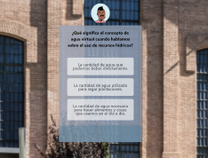

Ready to Create?
Explore my projects and skills to witness the journey so far
Toque al Dom Project
In this project, we crafted a webpage for a music school utilizing design tools like Figma. We embraced an agile methodology using Jira for project management. For development, we employed HTML and CSS for the pages and integrated JavaScript to create interactive instrument pages that produce sounds. It was a harmonious blend of design and development, creating an immersive experience for music enthusiasts.

Pedagogical Project for Museu de Aigues
As the product owner of this project, I led a team in creating an engaging gamified webpage, featuring a trivia game for the Museu de Aigues in Barcelona. Our journey involved utilizing Figma for design, embracing agile methodology for project management, and implementing React with Tailwind CSS for development. Leveraging progressive web app (PWA) technology, we transformed the website into a mobile app, offering users an interactive and educational experience. Additionally, we incorporated augmented reality elements, enriching the museum visit with innovative technology.
